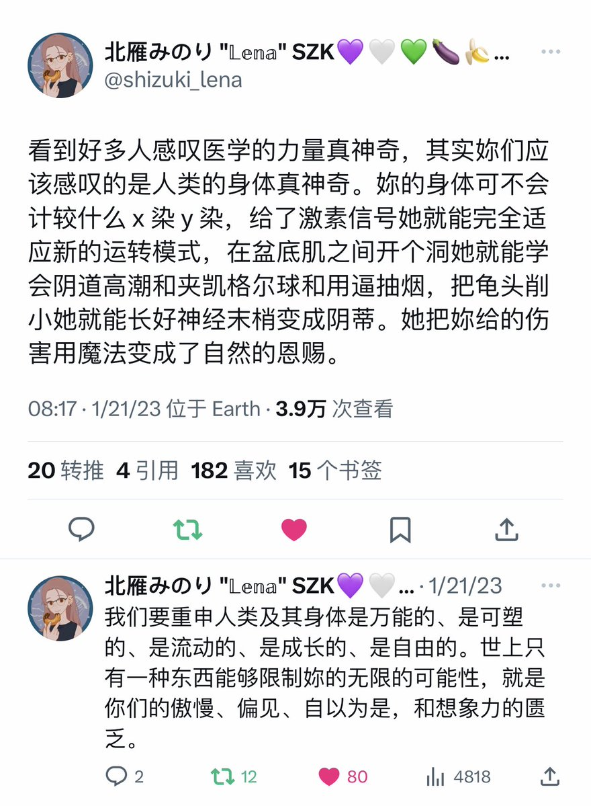
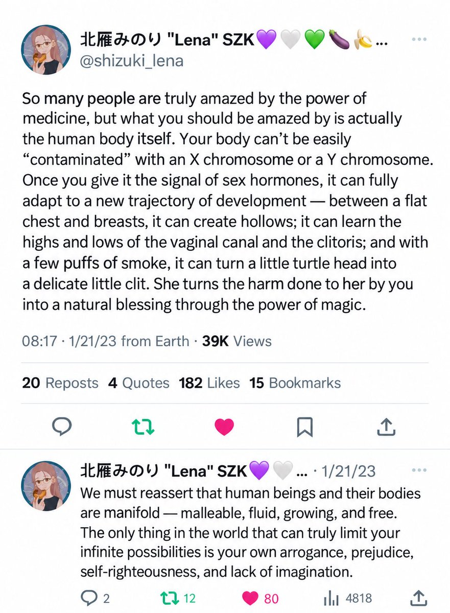

人类天然不拥有翅膀，但可以创造出飞机在天空翱翔。人类天然不拥有腮和鳍，但可以创造出船只和潜水艇探索海洋。人类天生无法发光，但可以借助火焰和电力将一切照亮。人类天然不拥有坚硬的甲壳、糙厚的皮毛或锋利的牙齿，但人类拥有关怀彼此的勇气。通过这份照护同类的意志，人类组建了社会，获得了属于自己的力量。作为「赝品」，我们知道，「只要拥有成为真物的意志，伪物就比真物还要来得真实。」作为人类，我们知道，「人类及其身体是万能的、是可塑旳、是流动的、是成长的、是自由。世上只有一种东西能够限制妳的无限的可能性，就是你们的傲慢、偏见、自以为是，和匮乏的想象。」

